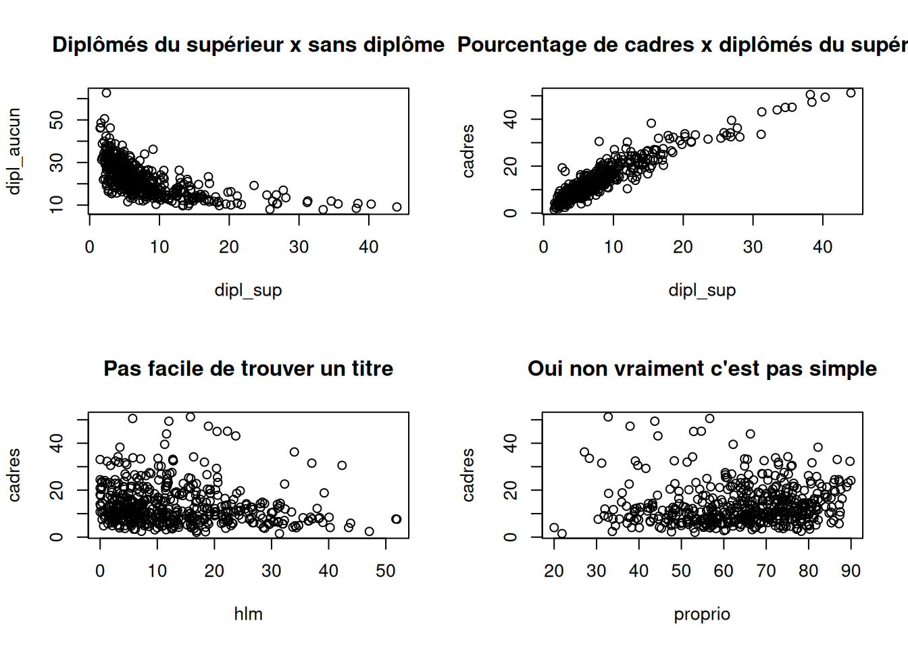

library(tidyverse)
library(questionr)
data(hdv2003)
data(rp2018)18 Itérer avec purrr
purrr est une extension du tidyverse qui fournit des outils pour travailler avec les vecteurs et les fonctions, et notamment pour itérer sur les éléments de vecteurs ou de listes en leur appliquant une fonction.
Dans cette section on aura besoin des extensions du tidyverse (dont purrr fait partie), que nous chargeons donc immédiatement, de même que les jeux de données rp2018 et hdv2003 de questionr.
18.1 Exemple d’application
Pour mieux appréhender de quoi il s’agit, on part du vecteur suivant, qui contient des extraits (fictifs ?) de discours politiques.
discours <- c(
"nous privilégierons une intergouvernementalisation sans agir anticonstitutionnellement",
"le souffle de la nation est le vent qui agite les drapeaux de nos libertés",
"nous devons faire preuve de plus de pédagogie pour cette réforme",
"mon compte twitter a été piraté"
)On souhaite calculer la longueur de chaque extrait, en nombre de mots.
On commence par découper grossièrement chaque extrait en mots en utilisant la fonction str_split() de stringr1.
mots <- str_split(discours, " ")
str(mots)
#> List of 4
#> $ : chr [1:7] "nous" "privilégierons" "une" "intergouvernementalisation" ...
#> $ : chr [1:15] "le" "souffle" "de" "la" ...
#> $ : chr [1:11] "nous" "devons" "faire" "preuve" ...
#> $ : chr [1:6] "mon" "compte" "twitter" "a" ...L’objet mots est une liste de vecteurs de chaînes de caractères qui contiennent les mots des différents extraits.
Calculer le nombre de mots de chaque extrait revient à calculer la longueur de chaque élément de mots. Pour cela on pourrait vouloir utiliser la fonction length() directement :
length(mots)
#> [1] 4Ceci ne fonctionne pas, car length() nous retourne le nombre d’éléments de mots, pas celui de chacun de ses éléments : ce qu’on veut, ça n’est pas length(mots) mais length(mots[[1]]), length(mots[[2]]), etc.
On a vu Section 17.3.4 qu’on peut pour cela utiliser une boucle for, par exemple de la manière suivante.
resultat <- list()
for (item in mots) {
resultat <- c(resultat, length(item))
}
resultat
#> [[1]]
#> [1] 7
#>
#> [[2]]
#> [1] 15
#>
#> [[3]]
#> [1] 11
#>
#> [[4]]
#> [1] 6Ça fonctionne, mais la syntaxe est un peu “lourde”.
La fonction map() de purrr propose exactement cette fonctionnalité. Elle prend deux arguments principaux :
- un vecteur ou une liste
- une fonction
et elle retourne une liste contenant le résultat de la fonction appliquée à chaque élément du vecteur ou de la liste.
En utilisant map() on peut remplacer notre boucle for par un simple :
map(mots, length)
#> [[1]]
#> [1] 7
#>
#> [[2]]
#> [1] 15
#>
#> [[3]]
#> [1] 11
#>
#> [[4]]
#> [1] 6map va itérer sur les éléments de mots, leur appliquer tour à tour la fonction length passée en argument, et regrouper les résultats dans une liste.
À noter qu’on peut évidemment utiliser le pipe.
mots %>% map(length)
#> [[1]]
#> [1] 7
#>
#> [[2]]
#> [1] 15
#>
#> [[3]]
#> [1] 11
#>
#> [[4]]
#> [1] 6Ici notre résultat est une liste. Or il pourrait être simplifié sous forme de vecteur atomique, puisque tous ses éléments sont des nombres.
Si on souhaitait obtenir un vecteur numérique avec une boucle for, il faut soit convertir le résultat de la boucle précédente en vecteur atomique (avec unlist() ou purrr::flatten_int()), soit modifier cette boucle pour qu’elle génère plutôt un vecteur numérique :
resultat <- numeric(length(discours))
for (i in seq_along(mots)) {
resultat[i] <- length(mots[[i]])
}
resultat
#> [1] 7 15 11 6Mais purrr propose des variantes de la fonction map qui permettent justement de s’assurer du type de résultat obtenu. Ainsi, map_dbl() renverra toujours un vecteur de nombres flottants, et map_int() un vecteur de nombres entiers. En remplacement de la boucle for ci-dessus, on peut donc utiliser :
mots %>% map_int(length)
#> [1] 7 15 11 618.2 map et ses variantes
18.2.1 Modes d’appel de map
L’objectif de map est donc d’appliquer une fonction à l’ensemble des éléments d’un vecteur ou d’une liste.
On a vu qu’on pouvait l’utiliser pour appliquer la fonction length à chacun des vecteurs contenus par la liste mots. En utilisant map_int on s’assure de récupérer un simple vecteur numérique, plus facile à utiliser par la suite si on souhaite par exemple calculer une moyenne.
mots %>% map_int(length)
#> [1] 7 15 11 6Si on souhaitait plutôt extraire le dernier mot de chaque vecteur, on pourrait créer une fonction spécifique et l’appliquer avec map().
dernier_mot <- function(v) {
tail(v, 1)
}
mots %>% map(dernier_mot)
#> [[1]]
#> [1] "anticonstitutionnellement"
#>
#> [[2]]
#> [1] "libertés"
#>
#> [[3]]
#> [1] "réforme"
#>
#> [[4]]
#> [1] "piraté"Comme notre résultat est une liste de chaînes de caractères simples, on peut forcer le résultat à être plutôt un vecteur de type character en utilisant map_chr() :
mots %>% map_chr(dernier_mot)
#> [1] "anticonstitutionnellement" "libertés"
#> [3] "réforme" "piraté"Comme notre fonction est très courte, on peut aussi préférer utiliser une fonction anonyme, introduites Section 14.4.2.
mots %>% map_chr(function(v) {
tail(v, 1)
})
#> [1] "anticonstitutionnellement" "libertés"
#> [3] "réforme" "piraté"On peut aussi utiliser la notation abrégée sous forme de formule, propre aux fonctions du tidyverse, présentée Section 15.3.
mots %>% map_chr(~ tail(.x, 1))
#> [1] "anticonstitutionnellement" "libertés"
#> [3] "réforme" "piraté"On peut également utiliser la notation compacte pour les fonctions anonymes disponible sous R à partir de la version 4.1.
mots %>% map_chr(\(v) tail(v, 1))
#> [1] "anticonstitutionnellement" "libertés"
#> [3] "réforme" "piraté"Enfin, si on fournit des arguments supplémentaires à map, ils sont passés comme argument à la fonction qu’il applique, on peut donc également utiliser la notation suivante :
mots %>% map_chr(tail, 1)
#> [1] "anticonstitutionnellement" "libertés"
#> [3] "réforme" "piraté"Dans ce qui suit on utilisera de préférence la notation “formule”, mais toutes les versions ci-dessus sont équivalentes et donnent le même résultat.
Note
Petite astuce à noter, si on transmet à map() autre chose qu’une fonction, elle utilisera cette information pour extraire des éléments. Ainsi, v %>% map(1) extraiera le premier élément de chaque élément du vecteur v, v %>% map("foo") extraiera les éléments nommés “foo”, etc.
18.2.2 Variantes de map
On a vu que map propose plusieurs variantes qui permettent de contrôler le type de résultat qu’elle retourne :
map()retourne une listemap_int()retourne un vecteur atomique d’entiersmap_dbl()retourne un vecteur atomique de nombres flottantsmap_chr()retourne un vecteur atomique de chaînes de caractèresmap_lgl()retourne un vecteur atomique deTRUE/FALSE
Attention, ces variantes sont très strictes : si la fonction appelée retourne un résultat qui n’est pas compatible avec le résultat attendu, elle génère une erreur. C’est le cas si dans le code précédent on essaie de récupérer chaque dernier mot sous forme d’un vecteur de nombres :
mots %>% map_dbl(tail, 1)
#> Error in `map_dbl()`:
#> ℹ In index: 1.
#> Caused by error:
#> ! Can't coerce from a string to a double.Pour pouvoir utiliser ces variantes et obtenir un vecteur atomique, chaque résultat retourné par la fonction appliquée doit être de longueur 1. Ainsi, si on souhaitait extraire plutôt la liste des mots contenant un “f”, certains résultats ne contiennent aucun élément, et d’autres en contiennent deux :
mots %>% map(~ str_subset(.x, "f"))
#> [[1]]
#> character(0)
#>
#> [[2]]
#> [1] "souffle"
#>
#> [[3]]
#> [1] "faire" "réforme"
#>
#> [[4]]
#> character(0)Dans ce cas on ne peut pas utiliser map_chr() : si on essaie on obtient un message d’erreur nous indiquant que certains résultats de str_subset() ne sont pas au bon format.
mots %>% map_chr(~ str_subset(.x, "f"))
#> Error in `map_chr()`:
#> ℹ In index: 1.
#> Caused by error:
#> ! Result must be length 1, not 0.Dans ce cas, on doit donc utiliser map() et conserver le résultat sous forme de liste, qui elle peut contenir des éléments de longueurs différentes.
mots %>%
map(~ str_subset(.x, "f"))
#> [[1]]
#> character(0)
#>
#> [[2]]
#> [1] "souffle"
#>
#> [[3]]
#> [1] "faire" "réforme"
#>
#> [[4]]
#> character(0)On notera qu’on peut tout à fait enchaîner les map() si on veut effectuer des opérations supplémentaires.
mots %>%
map(~ str_subset(.x, "f")) %>%
map_int(length)
#> [1] 0 1 2 018.2.3 map et tableaux de données
La page suivante contient les données du jeu de données rp2018 sous la forme de fichiers CSV, avec un fichier par département :
https://github.com/juba/tidyverse/tree/main/resources/data/rp2018
À partir de cette page, on peut télécharger les fichiers CSV en utilisant des adresses de la forme :
https://raw.githubusercontent.com/juba/tidyverse/main/resources/data/rp2018/rp2018_01.csv
En remplaçant “01” par le code du département souhaité.
On peut créer une fonction genere_url() qui, à partir d’une liste de codes de départements, retourne les adresses des fichiers correspondant.
genere_url <- function(codes) {
paste0(
"https://raw.githubusercontent.com/juba/tidyverse/main/resources/data/rp2018/rp2018_",
codes,
".csv"
)
}
genere_url(c("42", "69"))
#> [1] "https://raw.githubusercontent.com/juba/tidyverse/main/resources/data/rp2018/rp2018_42.csv"
#> [2] "https://raw.githubusercontent.com/juba/tidyverse/main/resources/data/rp2018/rp2018_69.csv"Grâce à la fonction read_csv(), on peut charger directement dans notre session R un fichier en indiquant son URL.
data69 <- read_csv(genere_url("69"))Comment faire si l’on souhaite charger les fichiers de plusieurs départements ? La fonction read_csv() n’accepte qu’une seule URL à la fois, elle n’est pas vectorisée.
Dans ce cas on peut utiliser map() pour l’appliquer tour à tour à plusieurs URL.
departements <- c("38", "42", "69")
urls <- genere_url(departements)
dfs <- urls %>% map(read_csv)Le résultat dfs est une liste de trois tableaux de données. Chacun de ces éléments est un tibble : d’abord celui du fichier CSV des données de l’Isère, puis celui de la Loire, et enfin celui du Rhône.
On peut itérer sur cette liste dfs pour appliquer une fonction à chacun de ces tableaux.
# Affichage des dimensions de chaque tableau
dfs %>% map(dim)
#> [[1]]
#> [1] 146 37
#>
#> [[2]]
#> [1] 56 37
#>
#> [[3]]
#> [1] 132 37# Calcul de la moyenne de la variable dipl_aucun
dfs %>% map_dbl(~ mean(.x$dipl_aucun))
#> [1] 19.24298 23.57400 17.74882# Calcul du coefficient associé à la variable dipl_sup dans
# la régression linéaire de cadres en fonction de dipl_sup
dfs %>% map_dbl(~ {
reg <- lm(cadres ~ dipl_sup, data = .x)
reg$coefficients["dipl_sup"]
})
#> [1] 1.132317 1.264469 1.027263Si on souhaite réunir ces trois tibbles en un seul, on peut utiliser la fonction bind_rows() de dplyr.
departements <- c("38", "42", "69")
urls <- genere_url(departements)
df <- urls %>%
map(read_csv) %>%
bind_rows()
dfLes quelques lignes de code ci-dessus partent donc d’une liste d’identifiants de départements, génèrent les URL des fichiers CSV correspondant, les importent dans R et assemblent le résultat en un seul tableau. Plutôt efficace !
Note
bind_rows() est une fonction de dplyr. Si on souhaite utiliser uniquement des fonctions de purrr, on peut utiliser list_rbind(), qui donne le même résultat.
Une fonction utile en complément de map est la fonction list.files(), qui peut lister les fichiers ayant une certaine extension dans un dossier spécifique. Par exemple, l’instruction suivante liste tous les fichiers se terminant par .csv du sous-dossier data.
fichiers <- list.files("data", "*.csv", full.names = TRUE)On peut dès lors utiliser map(), read_csv() et bind_rows(), pour lire tous ces fichiers en une seule fois et les concaténer en un seul tableau de données.
d <- fichiers %>%
map(read_csv) %>%
bind_rows()
Note
On peut aussi utiliser bind_cols() ou list_cbind() quand les résultats d’un map sont des colonnes d’un tableau de données qu’on souhaite rassembler en les concaténant.
18.3 Itérer sur les colonnes d’un tableau de données
On a vu Section 16.3 que les tableaux de données (data frame ou tibble) sont en fait des listes dont les éléments sont les colonnes du tableau. Si on applique map() à un tableau, celle-ci itérera donc sur ses colonnes.
Par exemple, on peut appliquer n_distinct au jeu de données starwars et obtenir le nombre de valeurs distinctes de chacune de ses colonnes.
starwars %>% map_int(n_distinct)
#> name height mass hair_color skin_color eye_color birth_year
#> 87 46 39 12 31 15 37
#> sex gender homeworld species films vehicles starships
#> 5 3 49 38 24 11 16Le résultat est équivalent à celui qu’on obtient en faisant un summarise() sur l’ensemble des colonnes, comme vu Section 15.2, sauf que map_int() retourne un vecteur numérique tandis que summarise() renvoie un tibble à une ligne.
starwars %>%
summarise(
across(everything(), n_distinct)
)
#> # A tibble: 1 × 14
#> name height mass hair_color skin_color eye_color birth_year sex gender
#> <int> <int> <int> <int> <int> <int> <int> <int> <int>
#> 1 87 46 39 12 31 15 37 5 3
#> # ℹ 5 more variables: homeworld <int>, species <int>, films <int>,
#> # vehicles <int>, starships <int>De la même manière, si on veut connaître le nombre de valeurs manquantes pour chaque variable :
starwars %>% map_int(~ sum(is.na(.x)))
#> name height mass hair_color skin_color eye_color birth_year
#> 0 6 28 5 0 0 44
#> sex gender homeworld species films vehicles starships
#> 4 4 10 4 0 0 0Contrairement à across(), on ne peut pas spécifier directement une sélection de colonnes à map(). On peut par contre utiliser des fonctions comme keep() ou discard() qui “filtrent” les éléments d’une liste via une fonction qui renvoie TRUE ou FALSE.
On peut par exemple utiliser discard() après map() pour ne conserver que les colonnes ayant au moins une valeur NA.
starwars %>%
map_int(~ sum(is.na(.x))) %>%
discard(~ .x == 0)
#> height mass hair_color birth_year sex gender homeworld
#> 6 28 5 44 4 4 10
#> species
#> 4Ou bien utiliser keep() pour n’appliquer mean() qu’aux variables numériques.
starwars %>%
keep(is.numeric) %>%
map_dbl(mean, na.rm = TRUE)
#> height mass birth_year
#> 174.60494 97.31186 87.5651218.4 modify
modify() est une variante de map() qui a pour particularité de renvoyer un résultat du même type que la liste ou le vecteur donné en entrée.
Ainsi, si on l’applique à un vecteur de chaînes de caractères, le résultat sera aussi un vecteur de chaînes de caractères.
v <- c("brouette", "moto", "igloo")
v %>% modify(~ paste("incroyable", .x))
#> [1] "incroyable brouette" "incroyable moto" "incroyable igloo"Si on l’applique à une liste, le résultat sera aussi une liste.
v <- list("brouette", "moto", "igloo")
v %>% modify(~ paste("incroyable ", .x))
#> [[1]]
#> [1] "incroyable brouette"
#>
#> [[2]]
#> [1] "incroyable moto"
#>
#> [[3]]
#> [1] "incroyable igloo"L’objectif de modify() est de permettre de “modifier” une liste ou un vecteur en lui appliquant une fonction tout en étant sûr qu’on ne va pas modifier son type.
L’intérêt principal de modify() est qu’elle propose deux variantes, modify_if() et modify_at(), qui sélectionnent les éléments respectivement via une fonction et via leur nom ou leur position, et qui n’appliquent la fonction de transformation qu’aux éléments sélectionnés.
Cela peut être particulièrement utile quand on l’applique à un tableau de données. Par exemple le code suivant utilise modify_if() pour transformer uniquement les colonnes de type factor de hdv2003 en character, et laisser les autres inchangées.
hdv2003 %>% modify_if(is.factor, as.character)On notera qu’on obtient le même résultat avec le code suivant qui utilise across() de dplyr.
hdv2003 %>%
mutate(
across(
where(is.factor),
as.character
)
)modify_at permet d’appliquer une fonction à certaines variables à partir de leurs noms.
hdv2003 %>%
modify_at(c("sexe", "qualif"), as.character)En utilisant vars(), on peut sélectionner les variables avec toutes les possibilités offertes par la tidy selection.
hdv2003 %>%
modify_at(vars(hard.rock:sport), as.character)
#> Warning: Using `vars()` in .at was deprecated in purrr 1.0.0.Là aussi, on peut obtenir le même résultat en utilisant across().
hdv2003 %>%
mutate(
across(
hard.rock:sport,
as.character
)
)18.5 imap
Imaginons que nous avons récupéré les données suivantes, qui représentent des évaluations obtenues par quatre restaurants, sous la forme d’une liste.
restos <- list(
"La bonne fourchette" = c(3, 3, 2, 5, 2, 3, 2, 4, 1, 3),
"La choucroute de l'amer" = c(4, 1, 2, 4, 2, 5, 2),
"L'Hair de rien" = c(1, 5, 5, 1, 5, 3, 1, 5, 2),
"La blanquette de Vaulx" = c(4, 1, 3, 1, 3, 3, 1, 4, 2, 5)
)À partir de cette liste, on souhaite créer un tableau de données comportant la moyenne et l’écart-type des notes de chaque restaurant. Comme on l’a vu précédemment, cela peut se faire avec l’aide de map() et bind_rows().
restos %>%
map(~ tibble(moyenne = mean(.x), ecart_type = sd(.x))) %>%
bind_rows()
#> # A tibble: 4 × 2
#> moyenne ecart_type
#> <dbl> <dbl>
#> 1 2.8 1.14
#> 2 2.86 1.46
#> 3 3.11 1.90
#> 4 2.7 1.42On obtient le tableau souhaité, mais il manque une information : le nom du restaurant correspondant à chaque ligne. Cette information est incluse dans les noms des éléments de la liste restos, or la fonction passée à map n’y a pas accès, elle n’a accès qu’à leurs valeurs.
C’est pour ce type de cas de figure que purrr propose la famille de fonctions imap(). Celle-ci fonctionne de la même manière que map(), sauf que la fonction appliquée prend deux arguments : d’abord la valeur de l’élément courant, puis son nom.
Dans l’exemple suivant, on applique imap() à une liste simple et on affiche un message avec le nom et la valeur de chaque élément.
l <- list(nom1 = 1, nom2 = 3)
l2 <- l %>% imap(function(valeur, nom) {
message("La valeur de ", nom, " est ", valeur)
})
#> La valeur de nom1 est 1
#> La valeur de nom2 est 3On peut évidemment utiliser la notation “formule” de purrr, il faut juste se souvenir que dans ce cas .x correspond à la valeur, et .y au nom.
l2 <- l %>% imap(~ {
message("La valeur de ", .y, " est ", .x)
})
#> La valeur de nom1 est 1
#> La valeur de nom2 est 3Tout comme map() proposait les variantes map_int(), map_chr() ou map_lgl(), on peut également utiliser imap_dbl() ou imap_chr() pour forcer le type de résultat retourné.
Pour reprendre notre exemple de départ, on peut donc, en utilisant imap, récupérer le nom de l’élément courant de la liste restos et l’utiliser pour rajouter le nom du restaurant dans notre tibble de résultats.
On peut le faire avec une fonction anonyme “classique” :
restos %>%
imap(function(notes, nom) {
tibble(resto = nom, moyenne = mean(notes), ecart_type = sd(notes))
}) %>%
bind_rows()
#> # A tibble: 4 × 3
#> resto moyenne ecart_type
#> <chr> <dbl> <dbl>
#> 1 La bonne fourchette 2.8 1.14
#> 2 La choucroute de l'amer 2.86 1.46
#> 3 L'Hair de rien 3.11 1.90
#> 4 La blanquette de Vaulx 2.7 1.42On peut aussi utiliser la notation compacte de type formule, en se souvenant à nouveau que .x correspond à la valeur de l’élément courant, et .y à son nom.
restos %>%
imap(~ {
tibble(resto = .y, moyenne = mean(.x), ecart_type = sd(.x))
}) %>%
bind_rows()
#> # A tibble: 4 × 3
#> resto moyenne ecart_type
#> <chr> <dbl> <dbl>
#> 1 La bonne fourchette 2.8 1.14
#> 2 La choucroute de l'amer 2.86 1.46
#> 3 L'Hair de rien 3.11 1.90
#> 4 La blanquette de Vaulx 2.7 1.42
Note
Si on utilise imap() sur une liste ou un vecteur qui n’a pas de noms, le deuxième argument passé à la fonction appliquée sera l’indice de l’élément courant : 1 pour le premier, 2 pour le deuxième, etc.
18.6 walk
walk() est une variante de map() qui a pour particularité de ne pas retourner de résultat. On l’utilise lorsqu’on souhaite parcourir un vecteur ou une liste et appliquer à ses éléments une fonction dont on ne souhaite conserver que les “effets de bord” : afficher un message, générer un graphique, enregistrer un fichier…
Par exemple, le code suivant génère quatre diagrammes en barre indiquant la répartition des notes des différents restaurants vus dans la section précédente.
walk(restos, ~ barplot(table(.x)))
Comme pour map(), la variante iwalk() permet d’itérer à la fois sur les valeurs et sur les noms des éléments du vecteur ou de la liste. Ceci permet par exemple d’afficher le nom du restaurant comme titre de chaque graphique.
iwalk(restos, ~ barplot(table(.x), main = .y))Au final, on notera que l’utilisation de walk(), comme elle ne retourne pas de résultats, est très proche de celle d’une boucle for.
18.7 map2 et pmap : itérer sur plusieurs vecteurs en parallèle
Supposons qu’un.e collègue, qui travaille avec nous sur le jeu de données rp2018, nous a envoyé une liste de variables dont elle voudrait connaître les corrélations. Cette liste a été saisie dans un tableur sur deux colonnes, chaque ligne indiquant deux variables pour lesquelles elle souhaite qu’on effectue ce calcul.
Après importation dans R on obtient le tableau de données suivant.
correlations <- tribble(
~var1, ~var2,
"dipl_sup", "dipl_aucun",
"dipl_sup", "cadres",
"hlm", "cadres",
"hlm", "ouvr",
"proprio", "hlm"
)
correlations
#> # A tibble: 5 × 2
#> var1 var2
#> <chr> <chr>
#> 1 dipl_sup dipl_aucun
#> 2 dipl_sup cadres
#> 3 hlm cadres
#> 4 hlm ouvr
#> 5 proprio hlmPour pouvoir calculer les corrélations souhaitées, on doit itérer sur les deux vecteurs var1 et var2 en parallèle, et calculer la corrélation entre la colonne de rp2018 correspondant à la valeur courante de var1 et celle correspondant à la valeur courante de var2.
C’est précisément ce que fait la fonction map2(). Celle-ci prend trois arguments en entrée :
- deux listes ou vecteurs qui seront itérés en parallèle
- une fonction qui accepte deux arguments : ceux-ci prendront tour à tour les deux valeurs courantes des deux listes ou vecteurs itérés
On peut donc utiliser map2 pour itérer parallèlement sur les deux colonnes var1 et var2 de notre tableau correlations, et calculer la corrélation des deux colonnes correspondantes de rp2018.
map2(
correlations$var1,
correlations$var2,
~ cor(rp2018[[.x]], rp2018[[.y]])
)
#> [[1]]
#> [1] -0.6146729
#>
#> [[2]]
#> [1] 0.9291504
#>
#> [[3]]
#> [1] -0.1067832
#>
#> [[4]]
#> [1] 0.2126366
#>
#> [[5]]
#> [1] -0.7786399map2() propose les mêmes variantes map2_int(), mapr2_chr(), etc. que map(). On peut donc utiliser map2_dbl() pour récupérer un vecteur numérique plutôt qu’une liste, et l’utiliser par exemple pour rajouter une colonne à notre tableau de départ.
correlations$corr <- map2_dbl(
correlations$var1,
correlations$var2,
~ cor(rp2018[[.x]], rp2018[[.y]])
)
correlations
#> # A tibble: 5 × 3
#> var1 var2 corr
#> <chr> <chr> <dbl>
#> 1 dipl_sup dipl_aucun -0.615
#> 2 dipl_sup cadres 0.929
#> 3 hlm cadres -0.107
#> 4 hlm ouvr 0.213
#> 5 proprio hlm -0.779Si on souhaite uniquement capturer les effets de bord sans récupérer les résultats de la fonctions appliquée, on peut aussi utiliser la variante walk2().
Supposons maintenant que notre collègue nous a envoyé, toujours sous la même forme, une liste de variables dont elle souhaite obtenir un nuage de points, mais en fournissant également un titre à ajouter au graphique. On obtient le tableau suivant :
nuages <- tribble(
~var1, ~var2, ~titre,
"dipl_sup", "dipl_aucun", "Diplômés du supérieur x sans diplôme",
"dipl_sup", "cadres", "Pourcentage de cadres x diplômés du supérieur",
"hlm", "cadres", "Pas facile de trouver un titre",
"proprio", "cadres", "Oui non vraiment c'est pas simple"
)
nuages
#> # A tibble: 4 × 3
#> var1 var2 titre
#> <chr> <chr> <chr>
#> 1 dipl_sup dipl_aucun Diplômés du supérieur x sans diplôme
#> 2 dipl_sup cadres Pourcentage de cadres x diplômés du supérieur
#> 3 hlm cadres Pas facile de trouver un titre
#> 4 proprio cadres Oui non vraiment c'est pas simpleOn est dans une situation similaire à la précédente, sauf que cette fois on doit itérer sur trois vecteurs en parallèle. On va donc utiliser la fonction pmap() qui permet d’itérer sur autant de listes ou vecteurs que l’on souhaite. Plus précisément, comme on souhaite générer des graphiques on va utiliser la variante pwalk() qui ne retourne pas de résultat.
pmap() et pwalk() prennent deux arguments principaux :
- les vecteurs et listes sur lesquels itérer, eux-mêmes regroupés dans une liste
- une fonction acceptant autant d’arguments que de vecteur ou listes sur lesquels on itère
Dans notre exemple on aurait donc un appel de la forme suivante.
pwalk(
list(nuages$var1, nuages$var2, nuages$titre),
function(var1, var2, titre) {
plot(
rp2018[[var1]], rp2018[[var2]],
xlab = var1, ylab = var2, main = titre
)
}
)
Petite précision, si la liste est nommée, il faut que les noms des arguments de la fonction correspondent aux noms de la liste.
pwalk(
list(v1 = nuages$var1, v2 = nuages$var2, titre = nuages$titre),
function(v1, v2, titre) {
plot(
rp2018[[v1]], rp2018[[v2]],
xlab = v1, ylab = v2, main = titre
)
}
)À noter que comme nuages est un tableau de données, donc une liste dont les éléments sont ses colonnes, on obtient le même résultat avec :
pwalk(
nuages,
function(var1, var2, titre) {
plot(
rp2018[[var1]], rp2018[[var2]],
xlab = var1, ylab = var2, main = titre
)
}
)On peut utiliser la syntaxe “formule” pour la fonction anonyme, dans ce cas les arguments sont accessibles avec la notation ..1, ..2, etc. On notera que dans ce cas la syntaxe “formule” est sans doute moins lisible que la syntaxe classique avec function() qui permet de nommer les paramètres.
pwalk(
nuages,
~ {
plot(
rp2018[[..1]], rp2018[[..2]],
xlab = ..1, ylab = ..2, main = ..3
)
}
)Comme pour map() et map2(), pmap() propose aussi les variantes pmap_int(), pmap_chr(), etc.
18.8 Répéter une opération
Les fonctions de purrr peuvent être utilisées quand on souhaite juste répéter une opération un certain nombre de fois, à la place d’une boucle for.
Par exemple si on souhaite générer 10 vecteurs de 100 nombre aléatoires, on pourra remplacer la boucle suivante :
res <- list()
for (i in 1:10) {
res <- c(res, rnorm(100))
}Par un appel à map() :
res <- map(1:10, ~ rnorm(100))Ce qui donne un code un peu plus compact et plus lisible.
Note
De la même manière, si on s’intéresse juste aux effets de bord, on pourra éventuellement remplacer une boucle for par un appel à walk().
18.9 Quand (ne pas) utiliser map
Une fois qu’on a compris la logique de map() et de ses variantes, on peut être tenté.es de l’appliquer un peu systématiquement. Il faut cependant garder en tête que son usage n’est pas toujours conseillé notamment dans les cas où il existe déjà une fonction vectorisée qui permet d’obtenir le même résultat.
Ainsi cela n’aurait pas de sens de faire :
v <- 1:5
map_dbl(v, ~ .x + 10)
#> [1] 11 12 13 14 15Quand on peut simplement faire :
v + 10
#> [1] 11 12 13 14 15Pour prendre un exemple un peu moins caricatural, de nombreuses fonctions de stringr sont vectorisées, il n’est donc pas utile de faire :
textes <- c("fantastique", "effectivement", "igloo")
map_int(textes, ~ str_count(.x, "f"))
#> [1] 1 2 0Quand on peut faire simplement :
str_count(textes, "f")
#> [1] 1 2 0Par contre map() est utile quand on souhaite appliquer une fonction qui n’est pas vectorisée à plusieurs valeurs, comme c’est le cas par exemple avec read_csv(), qui ne permet pas de charger plusieurs fichiers d’un coup :
fichiers <- c("fichier1.csv", "fichier2.csv")
l <- fichiers %>% map(read_csv)Ou quand on veut itérer sur un argument non vectorisé, par exemple ici sur l’argument pattern de str_count() :
voyelle <- c(a = "a", e = "e", i = "i")
textes <- c("brouette", "moto", "igloo")
voyelle %>% map(~ str_count(textes, pattern = .x))
#> $a
#> [1] 0 0 0
#>
#> $e
#> [1] 2 0 0
#>
#> $i
#> [1] 0 0 1On l’utilise également quand on veut appliquer une fonction non pas à une liste, mais aux éléments qu’elle contient :
l <- list(1:3, c(2, 5))
l %>% map_int(length)
#> [1] 3 2À noter qu’en termes de performance, map() n’est pas forcément plus rapide qu’une boucle for, puisque dans les deux cas on itère sur un ensemble de valeurs. Par contre une fonction vectorisée existante sera toujours (beaucoup) plus rapide.
18.10 purrr vs *apply
Les fonctions de purrr ont des équivalents dans R “de base”, ce sont notamment les fonctions de la famille apply : lapply, sapply, mapply…
L’avantage de map() et des autres fonctions fournies par purrr et qu’elles sont plus explicites : on a des fonctions différentes selon qu’on veut seulement appliquer une fonction (map()), générer des effets de bord (walk), modifier une liste sans changer son type (modify()), etc. purrr propose également de nombreuses fonctions utiles qui facilite le travail avec les vecteurs et listes.
Mais un des avantages principaux des fonctions de la famille map() est qu’elles sont consistantes et cohérentes dans le type de résultat qu’elles retournent : on est certain que map() ou imap() retourneront une liste, que map_chr() ou map2_chr() retourneront un vecteur de chaînes de caractères, etc.
Là encore, il n’est pas question de dire qu’il ne faut pas utiliser les fonctions *apply. Si vous en avez l’habitude et qu’elles fonctionnent pour vous, il n’y a pas spécialement de raison de changer. Mais si vous n’avez pas l’habitude de ce type d’opérations ou si vous préférez une syntaxe plus cohérente et plus facile à retenir, les fonctions de purrr peuvent être intéressantes.
Si vous souhaitez en savoir plus, l’ouvrage en ligne R for data science contient une comparaison plus détaillée des deux familles de fonctions.
18.11 Ressources
Au-delà de celles présentées ici, purrr propose de nombreuses autres fonctions facilitant la manipulation et les itérations sur les listes et les vecteurs. On peut en trouver la liste complète et la documentation associée (en anglais) sur le site de l’extension.
La section Iteration de l’ouvrage en ligne R for data science (en anglais) propose une présentation de plusieurs fonctions de purrr.
RStudio propose une antisèche (en anglais, format PDF) qui résume les différentes fonctions de purrr.
Sur le blog en français de Lise Vaudor, on trouvera un billet Itérer des fonctions avec purrr et une suite practice makes purrr-fect.
18.12 Exercices
18.12.1 map et ses variantes
Exercice 1.1
La liste suivante rassemble les notes obtenues par un élève dans différentes matières.
notes <- list(
maths = c(12, 15, 8, 10),
anglais = c(18, 11, 9),
sport = c(5, 13),
musique = 14
)En utilisant map(), calculer une liste indiquant la moyenne dans chaque matière.
notes %>% map(mean)En utilisant une variante de map(), simplifier le résultat pour obtenir un vecteur numérique.
notes %>% map_dbl(mean)On a rajouté à la liste les notes obtenues en technologie, parmi lesquelles une note est manquante.
notes <- list(
maths = c(12, 15, 8, 10),
anglais = c(18, 11, 9),
sport = c(5, 13),
musique = 14,
techno = c(12, NA)
)Calculer à nouveau un vecteur numérique des moyennes par matière, mais sans tenir compte de la valeur manquante.
notes %>% map_dbl(~ mean(.x, na.rm = TRUE))
# Ou bien
notes %>% map_dbl(mean, na.rm = TRUE)Calculer une liste qui contient pour chaque matière la moyenne, la note minimale et la note maximale.
# On peut aussi utiliser list() plutôt que c()
notes %>%
map(~ c(
moyenne = mean(.x, na.rm = TRUE),
min = min(.x, na.rm = TRUE),
max = max(.x, na.rm = TRUE)
))Exercice 1.2
La liste suivante comporte les parcours biographiques de 5 personnes sous la forme de vecteurs indiquant leurs communes de résidence successives.
parcours <- list(
c("Lyon", "F1ixevi11e", "Saint-Dié-en-Poui11y"),
c("Sainte-Gabelle-sur-Sarthe"),
c("Décines", "Meyzieu", "Demptezieu"),
c("Meyzieu", "Lyon", "Paris", "F1ixevi11e", "Lyon"),
c("La Bâtie-Divisin", "Versai11es")
)À l’aide de map(), calculer une nouvelle liste comportant le nombre de villes de résidence pour chaque parcours.
parcours %>% map(length)Utiliser une variante de map() pour simplifier le résultat et obtenir un vecteur numérique plutôt qu’une liste.
parcours %>% map_int(length)Déterminer pour chaque parcours le nombre de fois où la personne a résidé à Lyon.
parcours %>% map_int(~ sum(.x == "Lyon"))On vient de repérer un problème dans les données : des caractères “l” ont été remplacés par des “1”. Utiliser map() pour corriger l’objet parcours en remplaçant tous les “1” par des “l”.
parcours <- parcours %>%
map(~ str_replace_all(.x, "1", "l"))Exercice 1.3
Le vecteur suivant contient les adresses de deux fichiers CSV contenant les données de rp2018 pour les départements de l’Ain et du Rhône :
urls <- c(
"https://raw.githubusercontent.com/juba/tidyverse/main/resources/data/rp2018/rp2018_01.csv",
"https://raw.githubusercontent.com/juba/tidyverse/main/resources/data/rp2018/rp2018_69.csv"
)Utiliser map() pour charger ces deux tableaux de données dans une liste nommée dfs.
dfs <- urls %>% map(read_csv)Utiliser map() et bind_rows() pour charger ces deux tableaux de données et les regrouper en une seule table d. Que constatez-vous ?
# Génère une erreur !
d <- urls %>%
map(read_csv) %>%
bind_rows()À l’aide de map(), afficher la variable code_insee des deux tableaux de dfs. D’où vient le problème ?
# Une variable a été importée en character, l'autre en numérique
dfs %>% map(~ .x$code_insee)Trouver une solution pour corriger le problème.
# En convertissant manuellement code_insee en character
d <- urls %>%
map(~ {
tab <- read_csv(.x)
tab$code_insee <- as.character(tab$code_insee)
tab
}) %>%
bind_rows()
# Ou bien en utilisant l'option col_types de read_csv
d <- urls %>%
map(read_csv, col_types = c("code_insee" = "character")) %>%
bind_rows()18.12.2 modify et itération sur les colonnes d’un tableau
Exercice 2.1
Soit le tableau de données d suivant :
d <- tribble(
~prenom, ~nom, ~age, ~taille,
"pierre-edmond", "multinivo", 19, 151,
"YVONNE-HENRI", "QUIDEU", 73, 182,
"jean-adélaïde", "hacépé", 27, NA
)Utliser typeof() et map() pour afficher le type de toutes les colonnes de d.
d %>% map(typeof)En utilisant keep() et map(), calculer la moyenne de toutes les variables numériques de d.
d %>%
keep(is.numeric) %>%
map(mean, na.rm = TRUE)En utilisant modify_if(), appliquer str_to_title() à toutes les colonnes de type character pour corriger la capitalisation des noms et prénoms.
d <- d %>% modify_if(is.character, str_to_title)À l’aide de la fonction discard(), supprimer de d les colonnes qui comportent des NA.
d %>% discard(~ sum(is.na(.x)) > 0)
# Ou bien
d %>% discard(~ any(is.na(.x)))18.12.3 imap et walk
Exercice 3.1
On reprend la liste de notes vue dans un exercice précédent.
notes <- list(
maths = c(12, 15, 8, 10),
anglais = c(18, 11, 9),
sport = c(5, 13),
musique = 14,
techno = c(12, NA)
)Sans utiliser de boucle for, afficher avec la fonction message() les valeurs de chaque moyenne tour à tour de manière à obtenir le résultat suivant :
#> 11.25
#> 12.6666666666667
#> 9
#> 14
#> 12notes %>% walk(~ message(mean(.x, na.rm = TRUE)))De la même manière afficher pour chaque matière les messages suivants :
#> Votre moyenne en maths est 11.25
#> Votre moyenne en anglais est 12.6666666666667
#> Votre moyenne en sport est 9
#> Votre moyenne en musique est 14
#> Votre moyenne en techno est 12notes %>% iwalk(function(notes, matiere) {
message("Votre moyenne en ", matiere, " est ", mean(notes, na.rm = TRUE))
})Construire un tableau de données avec une matière par ligne et deux colonnes contenant le nom de la matière et la valeur de la moyenne.
#> # A tibble: 5 × 2
#> matiere moyenne
#> <chr> <dbl>
#> 1 maths 11.2
#> 2 anglais 12.7
#> 3 sport 9
#> 4 musique 14
#> 5 techno 12notes %>%
imap(function(notes, matiere) {
tibble(
matiere = matiere,
moyenne = mean(notes, na.rm = TRUE)
)
}) %>%
bind_rows()Exercice 3.2
Lors de la présentation des boucles for, on a vu la fonction suivante qui affiche les dimensions de chaque tableau de données contenu dans une liste.
affiche_dimensions <- function(dfs) {
for (i in seq_along(dfs)) {
name <- names(dfs)[[i]]
df <- dfs[[i]]
message("Dimensions de ", name, " : ", nrow(df), "x", ncol(df))
}
}
l <- list(
hdv = hdv2003,
rp = rp2018
)
affiche_dimensions(l)
#> Dimensions de hdv : 2000x20
#> Dimensions de rp : 5417x62Réécrire affiche_dimensions() en utilisant iwalk().
affiche_dimensions <- function(dfs) {
iwalk(dfs, function(df, name) {
message("Dimensions de ", name, " : ", nrow(df), "x", ncol(df))
})
}Exercice 3.3
Lors de la présentation des boucles, on a vu la fonction summaries suivante, qui prend en paramètre un tableau de données et une liste de noms de colonnes, et applique la fonction summary() à ces colonnes.
summaries <- function(d, vars) {
for (var in vars) {
message("--- ", var, " ---")
print(summary(d[, var]))
}
}
summaries(hdv2003, c("sexe", "age"))Réécrire la fonction sans utiliser de boucle for.
summaries <- function(d, vars) {
vars %>%
walk(~ {
message("--- ", .x, " ---")
print(summary(d[, .x]))
})
}Modifier cette nouvelle fonction en utilisant keep() ou discard(), pour qu’elle fonctionne sans erreur même si l’une des variables passées en arguments n’existe pas.
summaries(hdv2003, c("sexe", "igloo", "age"))
#> --- sexe ---
#> sexe
#> Homme: 899
#> Femme:1101
#> --- age ---
#> age
#> Min. :18.00
#> 1st Qu.:35.00
#> Median :48.00
#> Mean :48.16
#> 3rd Qu.:60.00
#> Max. :97.00summaries <- function(d, vars) {
vars %>%
keep(~ .x %in% names(d)) %>%
walk(~ {
message("--- ", .x, " ---")
print(summary(d[, .x]))
})
}18.12.4 map2 et pmap
Exercice 4.1
Soit le tableau de données suivant, qui indique des couples de variables du jeu de données hdv2003.
croisements <- tribble(
~v1, ~v2,
"qualif", "clso",
"qualif", "cinema",
"sexe", "clso",
"sexe", "cinema"
)
croisements
#> # A tibble: 4 × 2
#> v1 v2
#> <chr> <chr>
#> 1 qualif clso
#> 2 qualif cinema
#> 3 sexe clso
#> 4 sexe cinemaÀ l’aide de map2(), calculer une liste qui contient les tableaux croisés des quatre couples de variables de croisements.
map2(
croisements$v1, croisements$v2,
~ table(hdv2003[[.x]], hdv2003[[.y]])
)Modifier le code précédent pour obtenir une liste comportant, pour chaque couple de variables :
- les noms des deux variables croisées
- le résultat du test du \(\chi^2\) appliqué aux deux variables
khi2 <- map2(
croisements$v1, croisements$v2,
~ list(
variables = paste(.x, .y),
chisq = chisq.test(hdv2003[[.x]], hdv2003[[.y]])
)
)Facultatif : filtrer la liste obtenue à l’étape précédente pour ne conserver que les éléments dont la p-value du test du \(\chi^2\) est inférieure à 0.001.
khi2 <- map2(
croisements$v1, croisements$v2,
~ list(
variables = paste(.x, .y),
chisq = chisq.test(hdv2003[[.x]], hdv2003[[.y]])
)
) %>%
keep(~ .x$chisq$p.value < 0.001)Exercice 4.2
Pour rappel, on peut simuler un tirage au sort de type “pile ou face” avec la fonction sample() de la manière suivante :
sample(
c("pile", "face"),
size = 10,
replace = TRUE,
prob = c(0.5, 0.5)
)
#> [1] "face" "face" "pile" "pile" "face" "pile" "pile" "pile" "face" "pile"Le tableau de données suivant définit trois types de tirages aléatoires différents. elements contient les éléments parmi lesquels on tire, probas les probabilités de chaque élément d’être tiré, et n le nombre de tirages.
tirages <- tribble(
~elements, ~probas, ~n,
c("pile", "face"), c(0.5, 0.5), 1000,
c("rouge", "noire"), c(0.1, 0.9), 500,
1:6, rep(1 / 6, 6), 800
)À l’aide de pmap() et de sample(), créer une liste contenant les résultats des simumations de ces trois séries de tirages.
resultats <- tirages %>%
pmap(
function(elements, probas, n) {
sample(elements, size = n, replace = TRUE, prob = probas)
}
)Représenter avec barplot() les résultats obtenus.
resultats %>% walk(~ barplot(table(.x)))18.12.5 Répéter une opération
Exercice 5.1
La fonction suivante simule le lancer de n dés à 6 faces.
lancer_des <- function(n) {
sample(1:6, size = n, replace = TRUE)
}
lancer_des(3)
#> [1] 5 6 4On souhaite utiliser cette fonction pour générer 10 lancers de 4 dés. On essaie avec le code suivant :
map(1:10, lancer_des, 4)Est-ce que cela fonctionne ? Pourquoi ?
Ça ne fonctionne pas car lancer_des() est appelée à chaque itération avec deux arguments : la valeur courante de l’itérateur, et 4. Ainsi dans sa première itération, map() exécute lancer_des(1, 4), ce qui génère un message d’erreur puisque lancer_des() n’accepte qu’un argument.
Trouver une solution en corrigeant le code.
map(1:10, ~ lancer_des(4))Exercice 5.2
Comme vu précédemment, la fonction suivante permet de simuler 20 lancers de pièces et de stocker le résultat dans un vecteur de chaînes de caractères.
sample(c("pile", "face"), size = 20, replace = TRUE)
#> [1] "pile" "face" "face" "face" "pile" "face" "pile" "face" "pile" "pile"
#> [11] "pile" "face" "face" "pile" "face" "face" "face" "pile" "face" "face"À l’aide de map() et de ce code, créer une liste nommée sims contenant le résultat de 100 simulations de 20 lancers.
sims <- map(
1:100,
~ sample(c("pile", "face"), size = 20, replace = TRUE)
)Toujours à l’aide de map(), calculer le nombre de “pile” obtenus pour chaque simulation de sims.
n_piles <- sims %>% map_int(~ sum(.x == "pile"))Déterminer le nombre minimal et le nombre maximal de “pile” obtenus parmi toutes les simulations de sims.
range(n_piles)Facultatif : à l’aide de la fonction head_while(), déterminer pour chaque simulation de sims le nombre de “pile” consécutifs obtenus avant le premier “face”.
sims %>% map_int(
~ length(head_while(.x, ~ .x == "pile"))
)Facultatif : la fonction rle() permet de calculer les run length encoding d’un vecteur.
rle(c("pile", "face", "face", "face", "pile", "pile"))
#> Run Length Encoding
#> lengths: int [1:3] 1 3 2
#> values : chr [1:3] "pile" "face" "pile"À l’aide de cette fonction et de map_int(), calculer pour chaque simulation la longueur de la plus grande série consécutive de “pile”.
sims %>% map_int(~ {
r <- rle(.x)
longueurs_pile <- r$lengths[r$values == "pile"]
max(longueurs_pile)
})Pour une application sérieuse on utilisera des fonctions spécifiques de “tokenization” d’extensions dédiées à l’analyse textuelle, comme
quanteda.↩︎